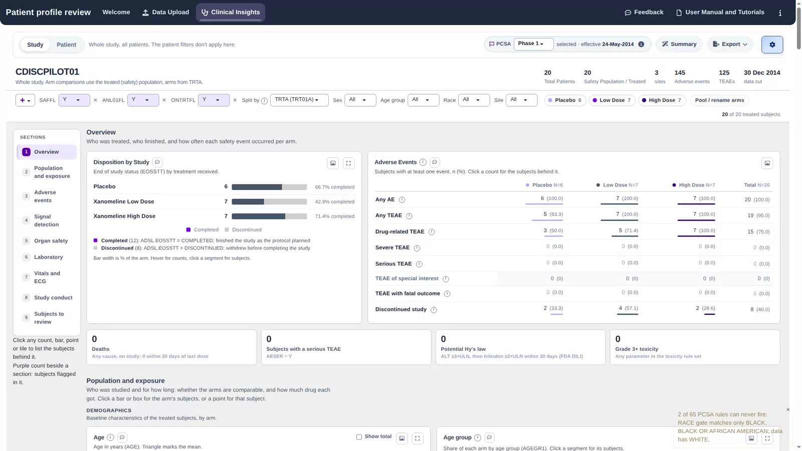

Featured · Patient safety · 12-step walkthrough
Patient Explorer
Patient-level safety review for clinical trials. Labs, adverse events, medications and exposure on one timeline, a study view where every number opens the patients behind it, plain-language Smart Filters, and an audit trail built for a regulated setting. Toxicity grading, PCSA flagging and lab monitoring run on configurable rules.
R · Shiny modules · plotly · reactable · ADaM · Posit Connect
Open case study → Purvadrishti
Purvadrishti